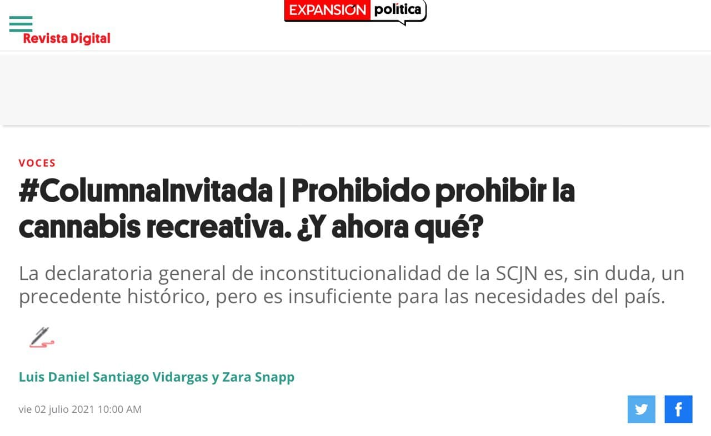
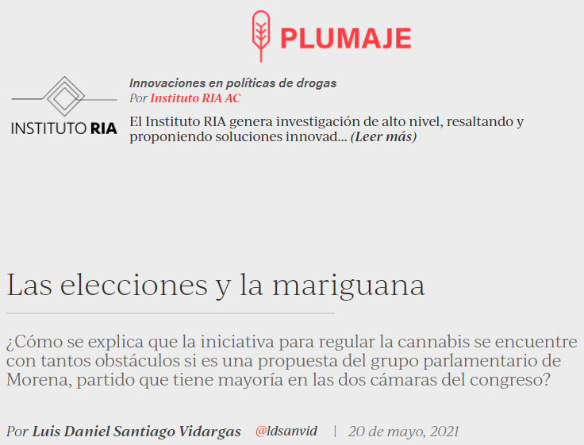
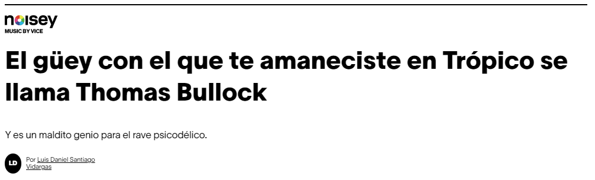

Published texts
Consuming cannabis while maintining a "normal" , active and functional lifestyle.
Animal Político, july 2021. Full article here.

Sha'Carri Richardson's suspension from the olympic games exposes the inconsistencies of anti-doping tests.
Animal Político, july 2021. Full article here.

The Supreme Court declared that prohibiting recreational use of cannabis is unconstitutional. Now what?
Expansión, july 2021. Full article here.

How the coming midterm elections in Mexico may impact the pending legislation on cannabis regulation.
Animal Político, may 2021. Full article here.

The profile of Thomas Bullock, a pioneer of the rave movement.
Vice Latin America, may 2018. Full article here.
